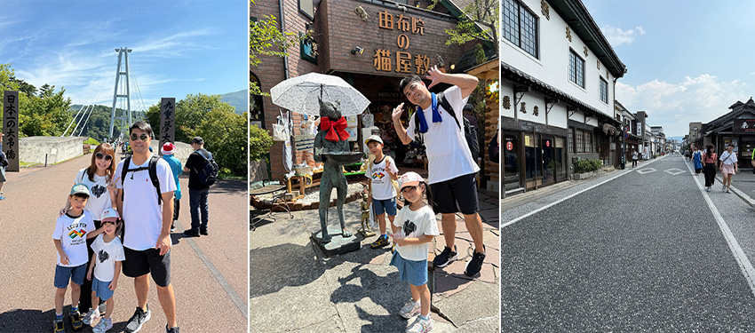

最近身邊許多親友都選擇到日本九州旅遊，社群動態上充滿了大家分享九州美麗的照片，這股熱潮也點燃了我探索九州的念頭。於是，我決定順著這股心動，親自走一趟九州，去看看這片融合自然、美食與文化的迷人土地。這次的旅程從熊本空港展開，飛機降落的那一刻，讓人迫不及待展開冒險。
第一天：高千穗峽、阿蘇火山國家公園、阿蘇草千里
一下飛機，我們便直奔位於宮崎縣的高千穗峽。抵達高千穗峽後，我們沿著步道前行，遠處的山林與溪流聲交織成天然的樂章，空氣中瀰漫著淡淡的樹木香氣。走進峽谷的那一刻，眼前的景象令人印象深刻，兩側的玄武岩峭壁筆直聳立，宛如巨人以利斧劈開的石牆，五瀨川碧綠如玉，靜靜流淌於谷底，偶爾映照著天光，閃爍著銀白色的光澤。遠處的真名井瀑布傾瀉而下，水霧在陽光下飄散成細碎的光點，難怪能入選日本百大瀑布之一，成為高千穗峽最令人流連的景致。
下午，我們驅車前往阿蘇火山國家公園。阿蘇以壯觀的火山地形和廣闊的草原聞名，其火山口是世界上最大的，壯麗的地貌宛如大地的傷痕，卻也孕育出豐富的草原與多樣生態。我們站在高處遠眺阿蘇五岳，彷彿能感受到大地呼吸的力量。隨後，我們來到阿蘇草千里，眼前是一片無邊無際的綠色草原，幾匹馬悠閒地散步吃草，還能近距離觀賞或騎乘，為整個旅程增添了不少樂趣。
 |
第二天：九重夢大吊橋、由布院、金麟湖、豆田町、薰長釀造元
第一站是九重夢大吊橋，是日本九州非常著名的觀光景點，也是日本最長的步行吊橋，吊橋橫跨山谷之間，腳下是壯麗的溪谷和清澈的溪流，遠方還有連綿的群山為背景，讓人感受到大自然的壯闊與美麗。
接著來到著名的溫泉鄉由布院，這座充滿藝術氣息的小鎮，處處展現精巧的藝術品與手作，讓人目不暇給。街道兩旁排列著各式特色小店，讓人忍不住停下腳步，細細品味每一處細節。花卉村內種滿了繽紛的花草，搭配典雅的歐式建築和石板小路，營造出浪漫且夢幻的氛圍，彷彿走進童話故事中的夢境小鎮。園區內還有多家商店，販售各種卡通角色周邊和吉卜力系列商品，讓人忍不住大開購物慾。隨後，我們漫步至附近的金麟湖，湖面如鏡般平靜，風景如詩如畫，是由布院最著名的湖泊，令人流連忘返。
之後我們前往豆田町，這裡保存著江戶時代的古街道與白牆建築，鎮上仍有許多歷史悠久的商家和老屋，漫步在石板路上，彷彿穿越時光。豆田町內有一家擁有百年歷史的清酒釀造廠 「薰長釀造元」，設有展示日本酒歷史與釀造工藝的酒藏資料館。最特別的是，這裡還能品嚐到獨特的大吟釀冰淇淋，風味別具一格。
|  |
第三天：門司港、海峽廣場、福岡lalaport
從門司港開始，門司港位於九州北端，是一座充滿復古風情的港口城市，擁有豐富的歷史背景和迷人的海景。走在門司港的街道上，隨處可見保留良好的大正時代建築，像是走進20世紀初的港口城市，而最吸睛的，莫過於那座佇立在港邊，造型逗趣又充滿喜感的香蕉人雕像，也為這片懷舊港灣增添了一絲獨特的幽默感。最令我印象深刻的是那座獨特的藍翼吊橋，當橋面緩緩升起時，就像是迎接船隻進港的優雅舞姿，充滿了儀式感。推薦喜歡歷史與港口風光的旅客，一定要把門司港列入九州行程中。
下午回到福岡，我們前往新開幕的福岡Lalaport，吸引我們前來的最大動力是那座首度進駐福岡、令人熱血沸騰的鋼彈立像，當巨大的鋼彈映入眼簾的那一刻，那份震撼與感動真是難以言喻。精細的機身細節、充滿力量感的姿態，讓身為鋼彈迷的我們興奮不已，忍不住駐足許久，從各個角度捕捉它的英姿，無疑已成為福岡市最受矚目的新興地標之一。
 |
第四天：太宰府天滿宮、柳川遊船、熊本城、搭乘熊本電車
早晨出發前往太宰府天滿宮，這裡是學問之神菅原道真的祭祀地，每逢考季香火鼎盛。表參道兩旁的特色小店琳瑯滿目，充滿熱鬧的氣氛，進入神社後，古樸莊嚴的建築與寧靜的氛圍，讓人心境也跟著沉澱下來。
離開太宰府，我們前往有水鄉之稱的柳川，搭上遊船，船夫一邊撐篙，一邊唱著當地的民謠，帶領我們穿梭於蜿蜒的水道之間。兩岸垂柳依依，古老的建築與小橋錯落其間，每當船緩緩接近低矮的橋洞，船夫總會提醒大家低下頭，避免碰上橋底，也為旅程增添了幾分趣味。這趟遊船不只是欣賞風光，更像是走進柳川，親身感受這座水鄉悠緩而獨特的生活節奏。
之後回到熊本，我們前往參觀雄偉的熊本城，高聳的石牆與黑白相間的天守閣氣勢非凡，即使歷經地震、仍在修復之中，依舊散發著不可撼動的威嚴。沿著參觀路線前行，可以看到工匠們細心修復石牆的身影，感受到這座城堡的韌性與深厚的歷史底蘊。登上天守閣後，熊本市的景色盡收眼底，視野遼闊，令人心曠神怡。作為九州最具代表性的名城之一，熊本城絕對是此行不可錯過的亮點。
在熊本的最後一段時光，我們特地搭上了可愛爆表的熊本熊電車。踏進月台，遠遠就看見那輛滿身笑臉、紅腮紅招牌亮眼的電車向我們招手，走進車廂，車內和窗邊都藏著熊本熊的身影，一路上我們不停按下快門，把這份療癒與歡樂，妥妥地收藏進旅途的回憶裡。
九州之旅在滿滿的回憶中畫下句點。從壯闊的火山草原到靜謐的水鄉，再到熱鬧的市街，每一處都帶給我們不同的驚喜與感動。沿途遇見的風景、品嚐的美食，以及那些不經意間的歡聲笑語，都成了這趟旅程最珍貴的紀念。或許旅行的時間總是短暫，但留下的溫度與色彩，會在心裡延續很久很久。